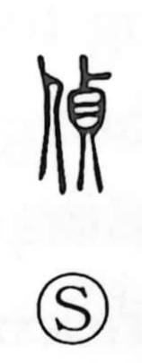

偵

Uncategorized
Kun: | On: tei
spy ・ to scout ・ to probe
Explanation
A phono-semantic character in which 貞 (tei) supplies the sound and also carries its original sense of divinatory inquiry—seeking the gods’ will by means of a ding tripod (鼎). Set beside the person element, that sense of solemn questioning shifts into human affairs: to ask after and feel out someone’s movements, to probe and reconnoiter—hence the meanings of spying and scouting. Although no archaic forms of 偵 are recorded, its components clearly reveal this path of meaning.